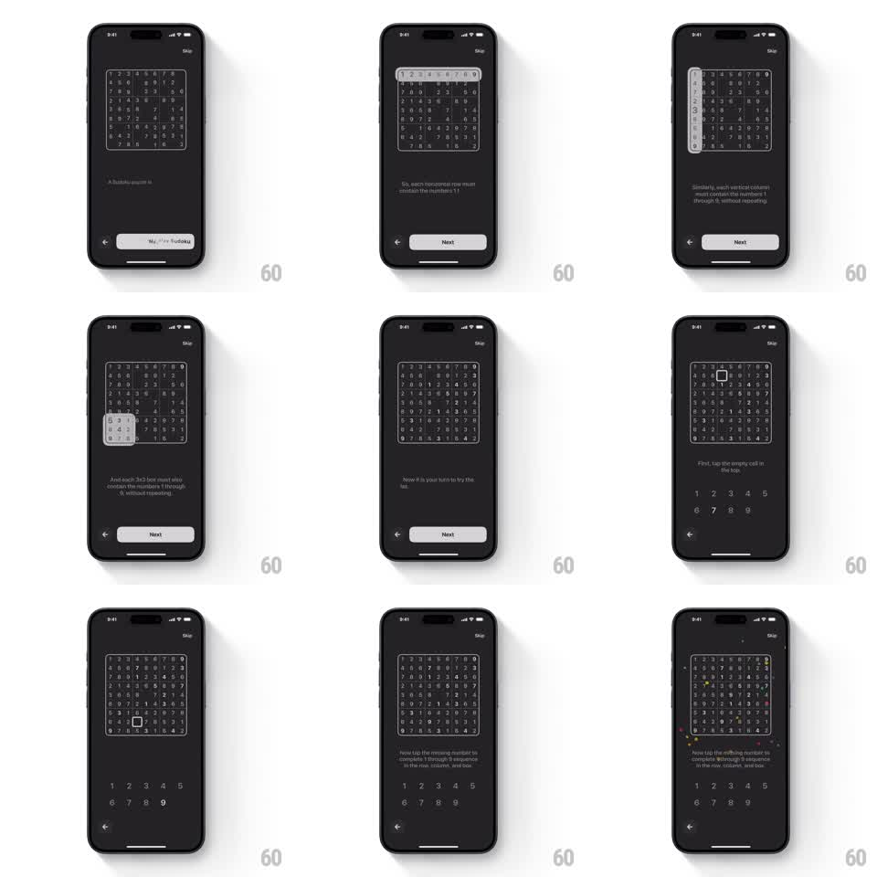

Media
Frame-by-frame

Rebuild this interaction 1:1: Sudoku a Day's learn-to-play tutorial - guided highlights sweep the row, column, and box of a sample grid, then hand the user a real mini-puzzle with a number pad, ending in a confetti burst.

Rebuild this interaction 1:1: Sudoku a Day's learn-to-play tutorial - guided highlights sweep the row, column, and box of a sample grid, then hand the user a real mini-puzzle with a number pad, ending in a confetti burst.
## Integration
Integration: stack-agnostic spec - springs given as stiffness/damping, timed motions as duration + curve; map every value to your framework and animation library of choice.
## Scene
Dark screen, "Skip" at top-right. A 9x9 sample Sudoku grid sits center; explanatory copy and a white Next/back control sit below. Steps: intro ("A Sudoku puzzle is..."), row highlight ("each horizontal row must contain the numbers 1..."), column highlight ("each vertical column must contain the numbers 1 through 9, without repeating"), 3x3 box highlight, "Now it is your turn", then the interactive step: the grid plus a number pad (1-5 over 6-9) with prompts "First, tap the empty cell in the top" and "Now tap the missing number to complete 1 through 9 sequence in the row, column, and box", finishing with a confetti burst over the grid.
## Motion spec
Pattern: guided grid highlights leading into a live mini-puzzle with a celebration.
- Each tutorial step crossfades its copy (200ms) and sweeps a highlight across the target region: the row, column, or 3x3 box brightens with a white overlay that slides in from the region's leading edge (350ms, ease-out) while the rest of the grid dims to 40%.
- The highlight region gets a thin white border that draws around it (stroke, 300ms).
- On the interactive step, the number pad rises from the bottom (spring ~320/26) and the prompt copy swaps (crossfade 200ms).
- Tapping the empty cell selects it (white ring, 150ms); tapping the correct digit stamps it in (scale 1.3 -> 1, spring ~400/18) and fires the confetti: ~60 pieces bursting from the grid's center (gravity, rotation, 1.6s life, staggered 30ms).
- Wrong digits shake (+-6pt, 300ms) and do not place.
## Calibration
- Only one region is highlighted at a time; the previous highlight clears before the next sweeps in.
- The confetti triggers once, immediately on the correct placement - not after a delay.
## Reduced motion
Highlights fade instead of sweeping; confetti replaced by a single checkmark fade.
## Don't miss
- The number pad is two rows (1-5, 6-9), centered under the grid.
- The dimmed cells keep their digits faintly visible - dimmed, not hidden.